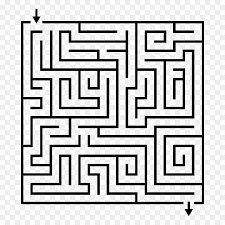

Важлива інформація про сайт
Тут ти зможеш відпочити та отримати заряд позитивних емоцій. Спробуй свої сили, покажи кмітливість і пройди всі рівні.
Також тут ти можеш подивитися різні корисні відео, розглянути фото, та послухати аудіо
Гра створена для розваги та гарного настрою — бажаємо успіхів!
"Гра — це маленька пригода,
де кожен рівень відкриває нові можливості та радість перемоги."
- Фото
- Відео
- Аудіо
- Стороння сторінка
Що за гра?
- Гра називається:Міні-лабіринт
- Суть гри:На екрані відображається квадрат-гравець.
- Він рухається по сторінці при натисканні на стрілки.
- Якщо стикається зі стіною – рух забороняється.
- Якщо доходить до фінішу – виводиться повідомлення «Ви перемогли!»
| Елемент гри | Призначення / Опис |
|---|---|
| Квадрат-гравець | Рухається по лабіринту |
| Стрілки клавіатури | Керування рухом гравця |
| Стінки лабіринту | Перешкоди, через які рух заборонено |
| Фініш | Місце, де з’являється повідомлення «Ви перемогли!» |
| Перевірка зіткнень | Забороняє проходити крізь стіни |
Медіа
Фото
Відео
Музика
Прикольний фільм
Міні-лабіринт
Не зміг зробити:|